Table of Contents
- 1. Loading datasets
- 1.1. Quality Control
- 1.2. Quality Control
- 1.3. Quality Control
- 1.4. Quality Control
- 1.5. Quality Control
- 2. Integration 'combined'
- 2.1. Cohort overview
- 2.2. Dataset merge
- 2.3. Normalisation
- 2.4. T cell selection (CD3+; all subtypes)
- 3. combined: CD8 lineage
- 4. COMBINED_CD8 lineage: full processing
- 4.1. Normalisation
- 4.2. Feature selection
- 4.3. PCA UMAP (pre-scVI reference)
- 4.4. Scanorama integration
- 4.5. UMAP on integration embedding (X_integrated)
- 4.6. COMBINED_CD8: integration comparison (PCA vs integrated UMAP)
- 4.7. COMBINED_CD8: state labeling
- 4.8. COMBINED_CD8: sanity check lineage scores
- 4.9. COMBINED_CD8: overview UMAP
- 4.10. COMBINED_CD8: standalone disease UMAP
- 4.11. COMBINED_CD8: individual state-marker gene UMAPs
- 5. COMBINED_CD8: cell type and metadata UMAPs
- 5.1. Marker scores: raw (log1p) and integrated (integrated_normalized_log1p)
- 5.2. Gamma-delta score UMAP (sanity check)
- 5.3. Annotation UMAP: integrated embedding vs PCA (raw embedding)
- 5.4. Score UMAP: integrated (integrated_normalized_log1p) vs raw (log1p)
- 6. COMBINED_CD8: inhibitory receptor analysis
- 6.1. IR expression per gene
- 6.2. IR dotplots
- 6.3. IR boxplots and stripplots
- 6.4. FindAllMarkers
- 6.5. FindAllMarkers
- 6.6. IR UMAPs per gene
1. Loading datasets
load_dataset
function: load_dataset parameters: filename: GSE205589.raw_counts_stand.h5ad max_cells: 30000 study: Ali2023 tissue_type: null cache_file: data/load_dataset_0cbd0fda4832.h5ad
load file 1: GSE205589.raw_counts_stand.h5ad
file_version: 2026-09-21 14:19:38.416365922
remap_columns
function: remap_columns parameters: column_map: {"Age": "age", "Chemistry": "chemistry", "Disease": "disease", "Donor": "donor", "Patient": "donor", "PatientID": "donor", "Sample": "sample_id", "SampleID": "sample_id", "Sex": "sex", "Tissue": "tissue_type", "assay": "chemistry", "cohort": "study", "condition": "disease", "condition_detail": "disease_detail", "dataset": "study", "detailed_context": "disease_detail", "diagnosis": "disease", "diagnosis_detail": "disease_detail", "disease_status": "disease", "disease_subtype": "disease_detail", "donor_id": "donor", "gender": "sex", "library_type": "chemistry", "organ": "tissue_type", "patient": "donor", "patient_id": "donor", "protocol": "chemistry", "sample": "sample_id", "sampleID": "sample_id", "sample_type": "tissue_type", "source_tissue": "tissue_type", "subtype": "disease_detail", "tissue": "tissue_type"} defaults: {"chemistry": "10x_5v2"} cache_file: data/remap_columns_8ab5b300610c.h5ad
Remapped columns: tissue → tissue_type
qc_full
function: qc_full parameters: excluded_gene_patterns: null expected_doublet_rate: 0.05 frac_treshold: 0.05 low_count_treshold: 1000 mad_outlier_var: 5 min_cells_per_gene: 20 mitochondria_cutoff_percentage: 8 name: Ali2023_BC_OC cache_file: data/qc_full_f4a7644c36d5.h5ad
load_dataset
function: load_dataset parameters: filename: GSE185344.raw_counts_stand.h5ad max_cells: 30000 study: Wong2022 tissue_type: null cache_file: data/load_dataset_87df9f6f6049.h5ad
load file 2: GSE185344.raw_counts_stand.h5ad
file_version: 2026-09-09 09:26:05.966599429
remap_columns
function: remap_columns parameters: column_map: {"Age": "age", "Chemistry": "chemistry", "Disease": "disease", "Donor": "donor", "Patient": "donor", "PatientID": "donor", "Sample": "sample_id", "SampleID": "sample_id", "Sex": "sex", "Tissue": "tissue_type", "assay": "chemistry", "cohort": "study", "condition": "disease", "condition_detail": "disease_detail", "dataset": "study", "detailed_context": "disease_detail", "diagnosis": "disease", "diagnosis_detail": "disease_detail", "disease_status": "disease", "disease_subtype": "disease_detail", "donor_id": "donor", "gender": "sex", "library_type": "chemistry", "organ": "tissue_type", "patient": "donor", "patient_id": "donor", "protocol": "chemistry", "sample": "sample_id", "sampleID": "sample_id", "sample_type": "tissue_type", "source_tissue": "tissue_type", "subtype": "disease_detail", "tissue": "tissue_type"} defaults: {"chemistry": "10x_5v1", "disease": "PrC", "disease_detail": "Prostate cancer (ICC/IDC)"} cache_file: data/remap_columns_b7ada7a031bc.h5ad
Remapped columns: tissue → tissue_type
qc_full
function: qc_full parameters: excluded_gene_patterns: null expected_doublet_rate: 0.05 frac_treshold: 0.05 low_count_treshold: 1000 mad_outlier_var: 5 min_cells_per_gene: 20 mitochondria_cutoff_percentage: 8 name: Wong2022_PrC_prostate cache_file: data/qc_full_0c0867d93e50.h5ad
load_dataset
function: load_dataset parameters: filename: GSE165045.raw_counts_stand.h5ad max_cells: 30000 study: Lee2022 tissue_type: null cache_file: data/load_dataset_08012f63823c.h5ad
load file 3: GSE165045.raw_counts_stand.h5ad
file_version: 2026-09-21 14:17:52.508620201
remap_columns
function: remap_columns parameters: column_map: {"Age": "age", "Chemistry": "chemistry", "Disease": "disease", "Donor": "donor", "Patient": "donor", "PatientID": "donor", "Sample": "sample_id", "SampleID": "sample_id", "Sex": "sex", "Tissue": "tissue_type", "assay": "chemistry", "cohort": "study", "condition": "disease", "condition_detail": "disease_detail", "dataset": "study", "detailed_context": "disease_detail", "diagnosis": "disease", "diagnosis_detail": "disease_detail", "disease_status": "disease", "disease_subtype": "disease_detail", "donor_id": "donor", "gender": "sex", "library_type": "chemistry", "organ": "tissue_type", "patient": "donor", "patient_id": "donor", "protocol": "chemistry", "sample": "sample_id", "sampleID": "sample_id", "sample_type": "tissue_type", "source_tissue": "tissue_type", "subtype": "disease_detail", "tissue": "tissue_type"} defaults: {"chemistry": "10x_3v3"} cache_file: data/remap_columns_2dda6607a929.h5ad
Remapped columns: tissue → tissue_type
qc_full
function: qc_full parameters: excluded_gene_patterns: null expected_doublet_rate: 0.05 frac_treshold: 0.05 low_count_treshold: 1000 mad_outlier_var: 5 min_cells_per_gene: 20 mitochondria_cutoff_percentage: 8 name: Lee2022_pancreas cache_file: data/qc_full_2e60a0970a02.h5ad
load_dataset
function: load_dataset parameters: filename: GSE212217.raw_counts_stand.h5ad max_cells: 30000 study: Chow2023 tissue_type: PBMC cache_file: data/load_dataset_f1c9eec22d9e.h5ad
load file 4: GSE212217.raw_counts_stand.h5ad
file_version: 2026-09-09 09:27:43.840832498
remap_columns
function: remap_columns parameters: column_map: {"Age": "age", "Chemistry": "chemistry", "Disease": "disease", "Donor": "donor", "Patient": "donor", "PatientID": "donor", "Sample": "sample_id", "SampleID": "sample_id", "Sex": "sex", "Tissue": "tissue_type", "assay": "chemistry", "cohort": "study", "condition": "disease", "condition_detail": "disease_detail", "dataset": "study", "detailed_context": "disease_detail", "diagnosis": "disease", "diagnosis_detail": "disease_detail", "disease_status": "disease", "disease_subtype": "disease_detail", "donor_id": "donor", "gender": "sex", "library_type": "chemistry", "organ": "tissue_type", "patient": "donor", "patient_id": "donor", "protocol": "chemistry", "sample": "sample_id", "sampleID": "sample_id", "sample_type": "tissue_type", "source_tissue": "tissue_type", "subtype": "disease_detail", "tissue": "tissue_type"} defaults: {"chemistry": "10x_5v1", "disease": "EC", "disease_detail": "Endometrial carcinoma (MMRd)"} cache_file: data/remap_columns_3b5bb47bc4cd.h5ad
remap_columns: no renames applied (targets already present or sources absent)
qc_full
function: qc_full parameters: excluded_gene_patterns: null expected_doublet_rate: 0.05 frac_treshold: 0.05 low_count_treshold: 1000 mad_outlier_var: 5 min_cells_per_gene: 20 mitochondria_cutoff_percentage: 8 name: Chow2023_EC_PBMC cache_file: data/qc_full_6350a939e5d0.h5ad
load_dataset
function: load_dataset parameters: filename: GSE121636.raw_counts_stand.h5ad max_cells: 30000 study: Borcherding2021 tissue_type: null cache_file: data/load_dataset_78d05651492b.h5ad
load file 5: GSE121636.raw_counts_stand.h5ad
file_version: 2026-09-09 09:26:35.540482876
remap_columns
function: remap_columns parameters: column_map: {"Age": "age", "Chemistry": "chemistry", "Disease": "disease", "Donor": "donor", "Patient": "donor", "PatientID": "donor", "Sample": "sample_id", "SampleID": "sample_id", "Sex": "sex", "Tissue": "tissue_type", "assay": "chemistry", "cohort": "study", "condition": "disease", "condition_detail": "disease_detail", "dataset": "study", "detailed_context": "disease_detail", "diagnosis": "disease", "diagnosis_detail": "disease_detail", "disease_status": "disease", "disease_subtype": "disease_detail", "donor_id": "donor", "gender": "sex", "library_type": "chemistry", "organ": "tissue_type", "patient": "donor", "patient_id": "donor", "protocol": "chemistry", "sample": "sample_id", "sampleID": "sample_id", "sample_type": "tissue_type", "source_tissue": "tissue_type", "subtype": "disease_detail", "tissue": "tissue_type"} defaults: {"chemistry": "10x_5v2", "disease": "ccRCC", "disease_detail": "Clear cell renal carcinoma"} cache_file: data/remap_columns_ec86cfcb4e7c.h5ad
Remapped columns: tissue → tissue_type
qc_full
function: qc_full parameters: excluded_gene_patterns: null expected_doublet_rate: 0.05 frac_treshold: 0.05 low_count_treshold: 1000 mad_outlier_var: 5 min_cells_per_gene: 20 mitochondria_cutoff_percentage: 8 name: Borcherding2021_ccRCC cache_file: data/qc_full_65aa4d64ac72.h5ad
load_dataset
function: load_dataset parameters: filename: Agne_CD.raw_counts_stand.h5ad max_cells: 30000 study: Agne_CD tissue_type: tissue cache_file: data/load_dataset_3ee3aae93d80.h5ad
load file 6: Agne_CD.raw_counts_stand.h5ad
file_version: 2026-10-06 12:31:32.239318799
remap_columns
function: remap_columns parameters: column_map: {"Age": "age", "Chemistry": "chemistry", "Disease": "disease", "Donor": "donor", "Patient": "donor", "PatientID": "donor", "Sample": "sample_id", "SampleID": "sample_id", "Sex": "sex", "Tissue": "tissue_type", "assay": "chemistry", "cohort": "study", "condition": "disease", "condition_detail": "disease_detail", "dataset": "study", "detailed_context": "disease_detail", "diagnosis": "disease", "diagnosis_detail": "disease_detail", "disease_status": "disease", "disease_subtype": "disease_detail", "donor_id": "donor", "gender": "sex", "library_type": "chemistry", "organ": "tissue_type", "patient": "donor", "patient_id": "donor", "protocol": "chemistry", "sample": "sample_id", "sampleID": "sample_id", "sample_type": "tissue_type", "source_tissue": "tissue_type", "subtype": "disease_detail", "tissue": "tissue_type"} defaults: {"chemistry": "10x_5v1", "disease": "CD", "disease_detail": "Crohn's disease (ileum)"} cache_file: data/remap_columns_d624e166f623.h5ad
remap_columns: no renames applied (targets already present or sources absent)
qc_full
function: qc_full parameters: excluded_gene_patterns: null expected_doublet_rate: 0.05 frac_treshold: 0.05 low_count_treshold: 1000 mad_outlier_var: 5 min_cells_per_gene: 20 mitochondria_cutoff_percentage: 8 name: Agne_CD_ileum cache_file: data/qc_full_3e56daf81c2e.h5ad
1.1. Quality Control
1.1.1. Ambient RNA QC
Checking if a cleanup is necessary, flagging cells with less than 1000 counts as potential ambient RNA contamination
No significant RNA contamination detected, skipping cleanup
1.1.2. Count QC
| index | count | mean | std | min | 25% | 50% | 75% | max |
|---|---|---|---|---|---|---|---|---|
| total_counts | 4125 | 2230.36 | 406.59 | 955.94 | 1962.10 | 2208.70 | 2489.32 | 4177.02 |
| n_genes_by_counts | 4125 | 1375.36 | 505.13 | 458 | 1018 | 1297 | 1644 | 4730 |
| pct_counts_mt | 4125 | 0 | 0 | 0 | 0 | 0 | 0 | 0 |
| pct_counts_ribo | 4125 | 0 | 0.01 | 0 | 0 | 0 | 0 | 0.12 |
| pct_counts_hb | 4125 | 0 | 0 | 0 | 0 | 0 | 0 | 0 |
| pct_counts_in_top_20_genes | 4125 | 3.35 | 0.72 | 1.41 | 2.85 | 3.24 | 3.74 | 6.80 |

Number of count outliers with MAD > 5: 41
Number of mitochondrial outliers with MAD > 5 or pct_counts_mt > 8: 0
Filtered out outliers: 41 (0.99%)
Filtering out genes expressed in less than 20 cells
Removed 13488 genes (62.89%)
After count QC:
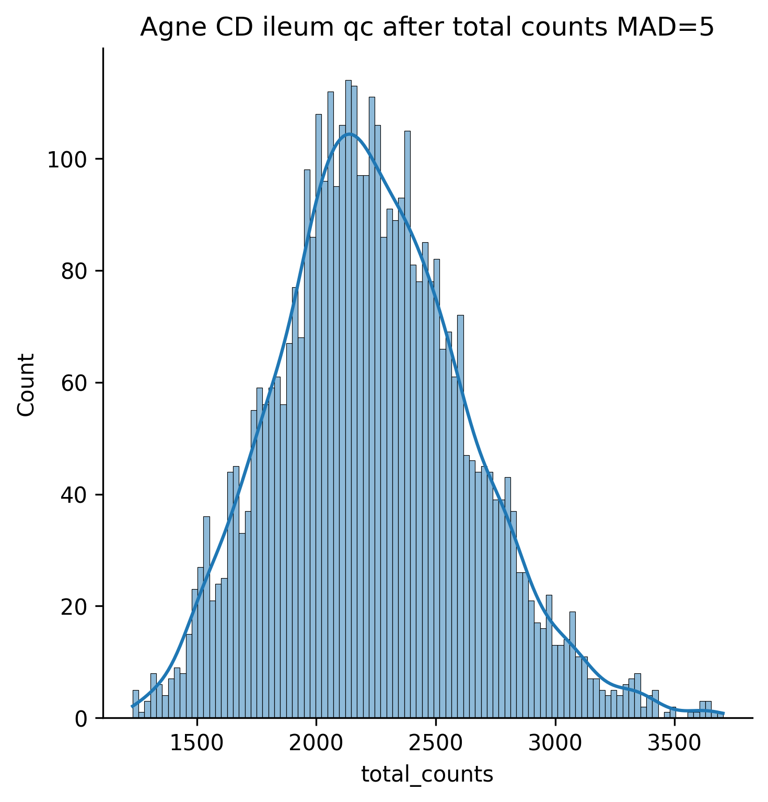 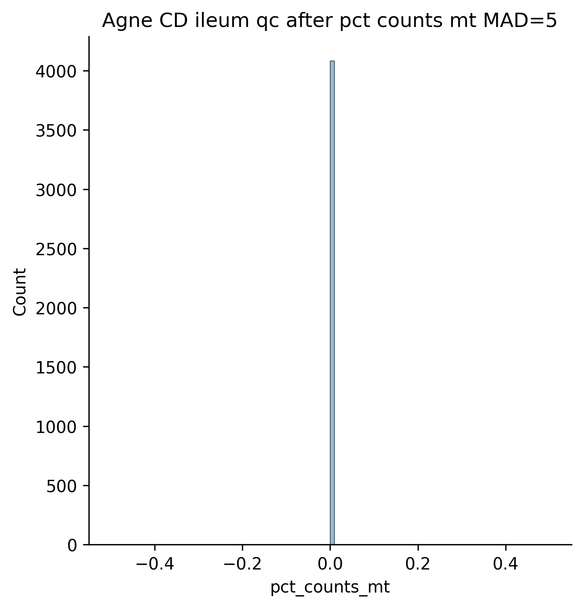 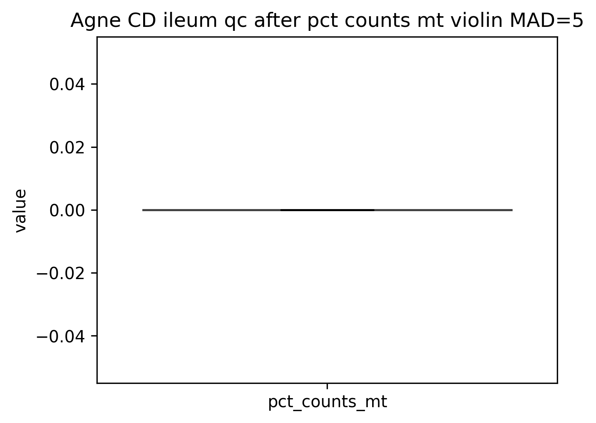 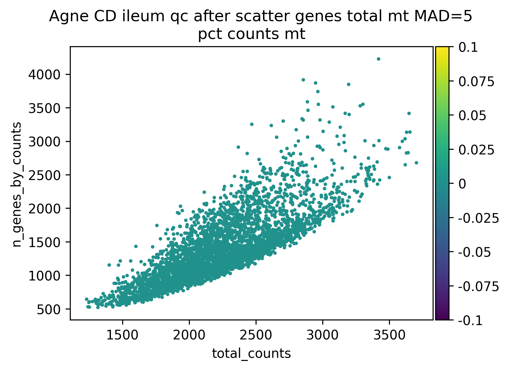
1.1.3. Doublet QC
Running scrublet with expected doublet rate 0.05
There are 2 predicted doublets, applying filter
After doublet step: (4079, 13488) (removed 0.12% cells)
1.1.4. Gene exclusion
Excluding genes matching the following patterns:
Note: Showing at most 10 rows and 10 columns from data with 11 rows and 2 columns.
| mt_genes | ['MT-'] |
| ribo_genes | ['RPS', 'RPL'] |
| hb_genes | ['^HBA|^HBB'] |
| stress_genes | ['G0S2', '^JUN', '^FOS', 'CDKN1A'] |
| IFN_genes | ['^IRF', '^IFN'] |
| ccl_genes | ['CCL'] |
| MHC_genes | ['^HLA-[A-Z]'] |
| hist_genes | ['HIST'] |
| comp_genes | ['^C1Q'] |
| ig_genes | ['^IGH', '^IGK', '^IGL'] |
Removing 281 genes (2.08%)
Shape after exclusion panel filtering: (4079, 13207)
load_dataset
function: load_dataset parameters: filename: Agne_CD_merad.raw_counts_stand.h5ad max_cells: 30000 study: Martin_CD tissue_type: tissue cache_file: data/load_dataset_276becb624b3.h5ad
load file 7: Agne_CD_merad.raw_counts_stand.h5ad
file_version: 2026-10-06 12:31:31.569275871
Loaded 'Agne_CD_merad.raw_counts_stand.h5ad' (backed): 51419 × 33538
Subsampled to 30000 cells (backed → memory)
Gene names: index → ENSG IDs (13057 without ensembl_id kept via symbol), dropped 0 duplicates → 33538 genes
Pre-computed QC metrics from gene_name column
1.1.5. Loaded: Agne_CD_merad.raw_counts_stand.h5ad
Shape: 30000 cells × 33538 genes
layers: ['counts'] | obsm: []
obs columns
Note: Showing at most 10 rows and 10 columns from data with 30 rows and 4 columns.
| index | column | dtype | n_unique | top values |
|---|---|---|---|---|
| 0 | study_id | category | 1 | CD_merad (30000) |
| 1 | sample_id | category | 22 | SAMN12356568 (3754), SAMN12356569 (2899), SAMN12356574 (2701) |
| 2 | donor | category | 11 | CD_merad_P14 (6653), CD_merad_PX (4112), CD_merad_P11 (3889) |
| 3 | tissue | category | 1 | small_intestine (30000) |
| 4 | disease | category | 1 | CrD (30000) |
| 5 | tissue_group | category | 1 | tissue (30000) |
| 6 | disease_group | category | 1 | IMID (30000) |
| 7 | disease_detail | category | 2 | inflammed (16514), uninflammed (13486) |
| 8 | chemistry | category | 2 | 10x_3p_V2 (27806), 10x_3p_V1 (2194) |
| 9 | seq_prime | category | 1 | 3prime (30000) |
var columns
Note: Showing at most 10 rows and 10 columns from data with 14 rows and 4 columns.
| index | column | dtype | n_unique | sample values |
|---|---|---|---|---|
| 0 | gene_name | object | 33538 | FAM231C (1), MIR1302-2HG (1), MT-CO1 (1) |
| 1 | ensembl_id | category | 20481 | ENSG00000310560 (1), ENSG00000284848 (1), ENSG00000284862 (1) |
| 2 | ensembl_source | category | 5 | direct_hgnc_exact (20471), unmapped (11191), ambiguous_direct_hgnc_exact (1866) |
| 3 | ensembl_gene_tag | category | 2 | single_gene (20480), multiple_genes (1) |
| 4 | mt | bool | min=0 mean=0.000388 max=1 | |
| 5 | ribo | bool | min=0 mean=0.0031 max=1 | |
| 6 | hb | bool | min=0 mean=0.000358 max=1 | |
| 7 | n_cells_by_counts | int64 | min=0 mean=746 max=3e+04 | |
| 8 | mean_counts | float64 | min=0 mean=0.109 max=465 | |
| 9 | log1p_mean_counts | float64 | min=0 mean=0.036 max=6.14 |
remap_columns
function: remap_columns parameters: column_map: {"Age": "age", "Chemistry": "chemistry", "Disease": "disease", "Donor": "donor", "Patient": "donor", "PatientID": "donor", "Sample": "sample_id", "SampleID": "sample_id", "Sex": "sex", "Tissue": "tissue_type", "assay": "chemistry", "cohort": "study", "condition": "disease", "condition_detail": "disease_detail", "dataset": "study", "detailed_context": "disease_detail", "diagnosis": "disease", "diagnosis_detail": "disease_detail", "disease_status": "disease", "disease_subtype": "disease_detail", "donor_id": "donor", "gender": "sex", "library_type": "chemistry", "organ": "tissue_type", "patient": "donor", "patient_id": "donor", "protocol": "chemistry", "sample": "sample_id", "sampleID": "sample_id", "sample_type": "tissue_type", "source_tissue": "tissue_type", "subtype": "disease_detail", "tissue": "tissue_type"} defaults: {"chemistry": "10x_3v2", "disease": "CD", "disease_detail": "Crohn's disease (ileum, Martin/Merad)"} cache_file: data/remap_columns_a5bf799cedb9.h5ad
remap_columns: no renames applied (targets already present or sources absent)
qc_full
function: qc_full parameters: excluded_gene_patterns: null expected_doublet_rate: 0.05 frac_treshold: 0.05 low_count_treshold: 1000 mad_outlier_var: 5 min_cells_per_gene: 20 mitochondria_cutoff_percentage: 8 name: Martin_CD_ileum cache_file: data/qc_full_d671d60f5d33.h5ad
1.2. Quality Control
1.2.1. Ambient RNA QC
Checking if a cleanup is necessary, flagging cells with less than 1000 counts as potential ambient RNA contamination
No significant RNA contamination detected, skipping cleanup
1.2.2. Count QC
| index | count | mean | std | min | 25% | 50% | 75% | max |
|---|---|---|---|---|---|---|---|---|
| total_counts | 30000 | 3659.46 | 3575.94 | 800 | 1746 | 2338 | 3742 | 38012 |
| n_genes_by_counts | 30000 | 834.17 | 364.62 | 501 | 602 | 721 | 920 | 4628 |
| pct_counts_mt | 30000 | 0 | 0 | 0 | 0 | 0 | 0 | 0 |
| pct_counts_ribo | 30000 | 2.84 | 1.37 | 0.05 | 1.88 | 2.84 | 3.73 | 8.93 |
| pct_counts_hb | 30000 | 0 | 0 | 0 | 0 | 0 | 0 | 0 |
| pct_counts_in_top_20_genes | 30000 | 38.59 | 17.06 | 16.19 | 29.06 | 31.75 | 35.85 | 92.79 |
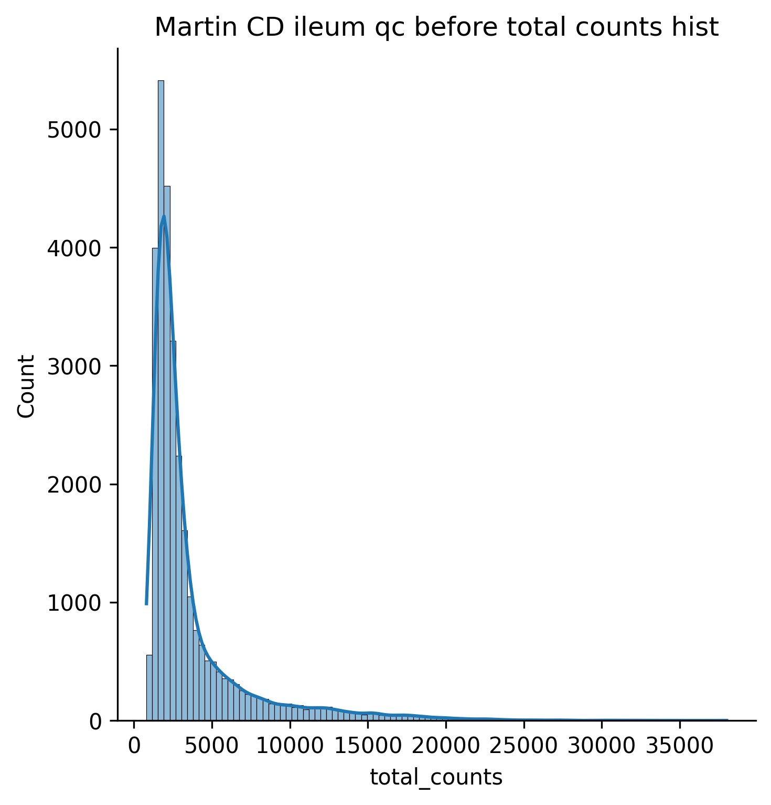 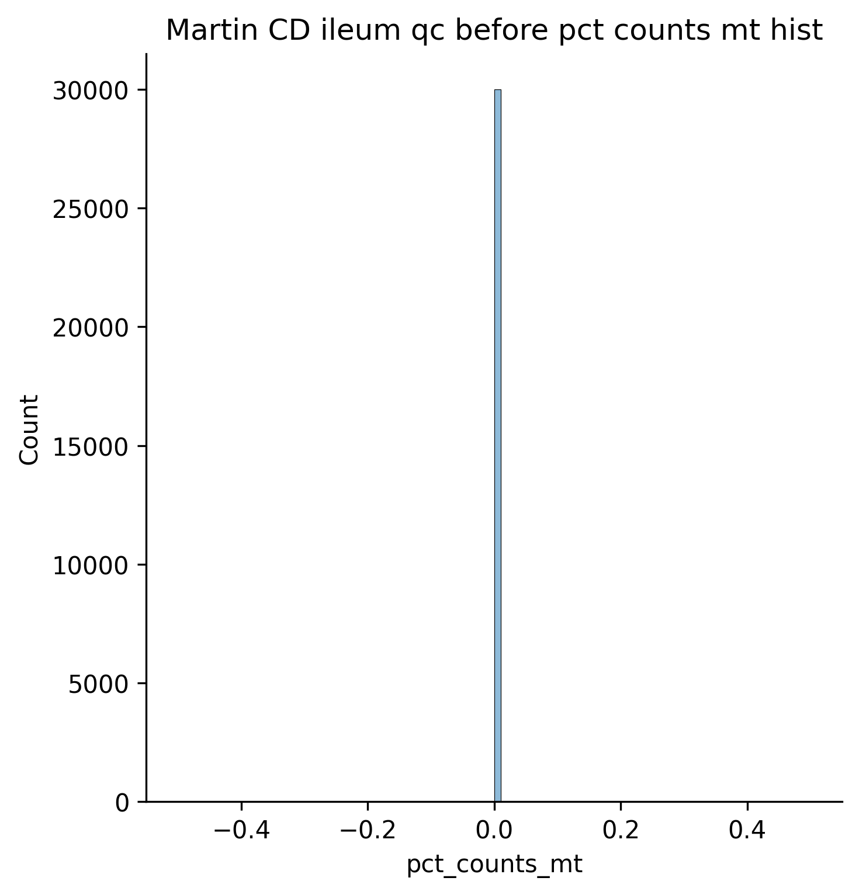 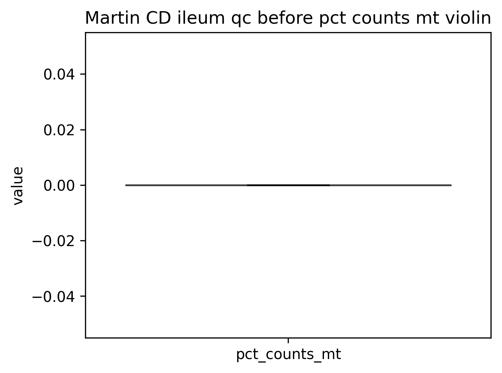 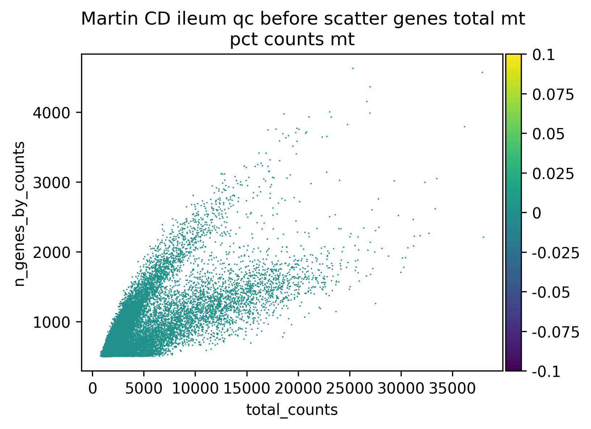
Number of count outliers with MAD > 5: 6171
Number of mitochondrial outliers with MAD > 5 or pct_counts_mt > 8: 0
Filtered out outliers: 6171 (20.57%)
Filtering out genes expressed in less than 20 cells
Removed 15067 genes (55.07%)
After count QC:
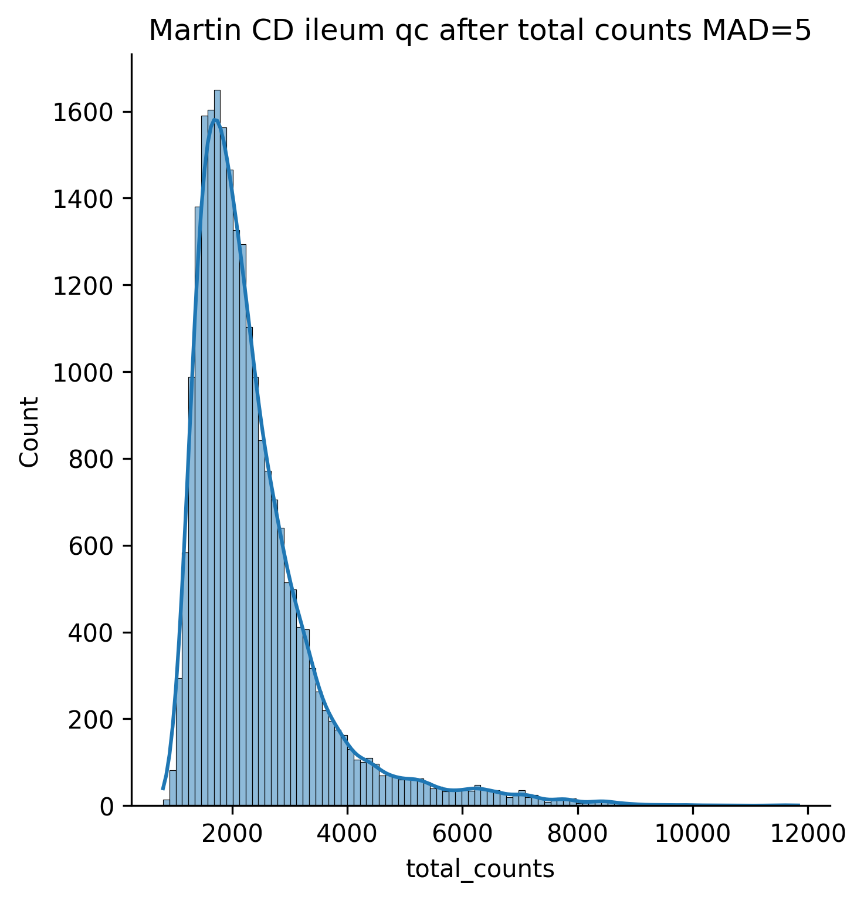 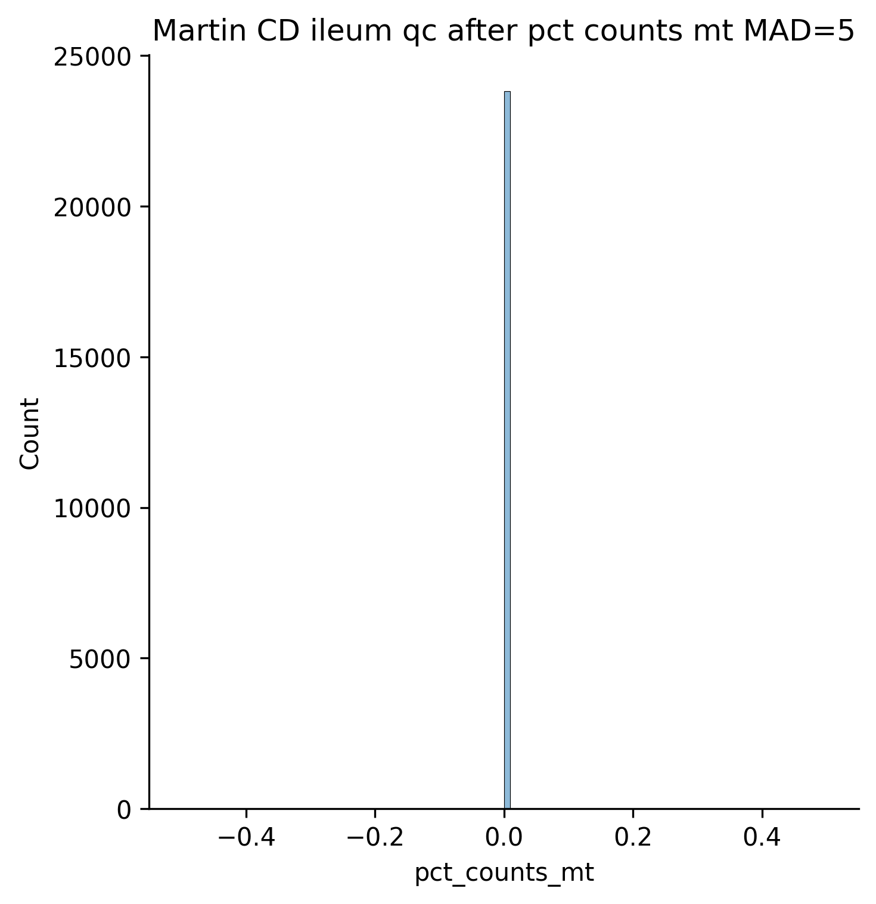 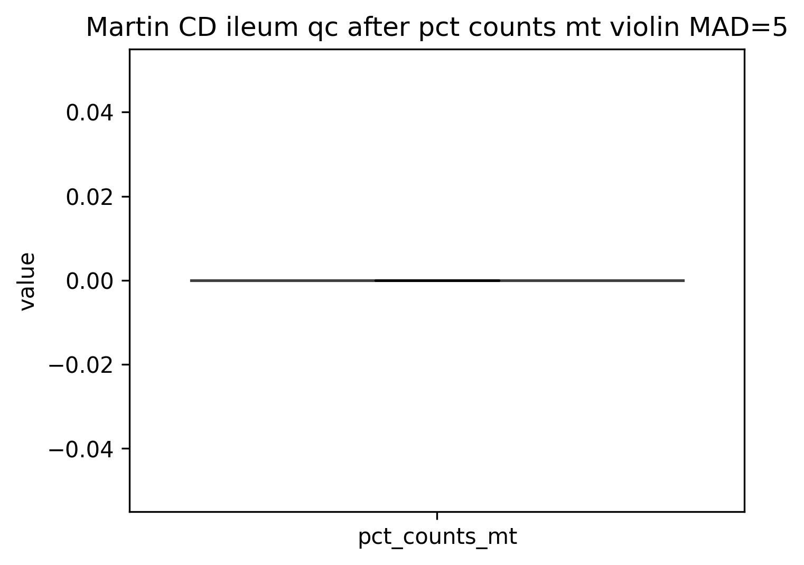 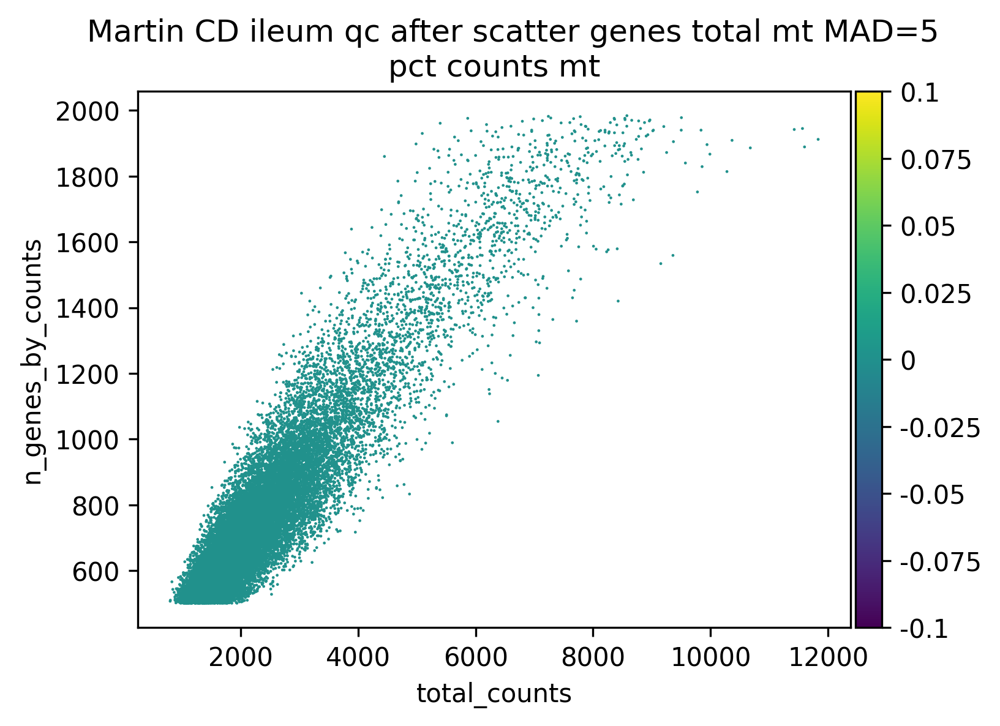
1.2.3. Doublet QC
Running scrublet with expected doublet rate 0.05
There are 2 predicted doublets, applying filter
After doublet step: (23824, 15067) (removed 0.02% cells)
1.2.4. Gene exclusion
Excluding genes matching the following patterns:
Note: Showing at most 10 rows and 10 columns from data with 11 rows and 2 columns.
| mt_genes | ['MT-'] |
| ribo_genes | ['RPS', 'RPL'] |
| hb_genes | ['^HBA|^HBB'] |
| stress_genes | ['G0S2', '^JUN', '^FOS', 'CDKN1A'] |
| IFN_genes | ['^IRF', '^IFN'] |
| ccl_genes | ['CCL'] |
| MHC_genes | ['^HLA-[A-Z]'] |
| hist_genes | ['HIST'] |
| comp_genes | ['^C1Q'] |
| ig_genes | ['^IGH', '^IGK', '^IGL'] |
Removing 370 genes (2.46%)
Shape after exclusion panel filtering: (23824, 14697)
load_dataset
function: load_dataset parameters: filename: GSE144469.raw_counts_stand.h5ad max_cells: 30000 study: Luoma2020 tissue_type: tissue cache_file: data/load_dataset_ba0d103b2b2b.h5ad
load file 8: GSE144469.raw_counts_stand.h5ad
file_version: 2026-10-06 12:31:52.123592475
Loaded 'GSE144469.raw_counts_stand.h5ad' (backed): 81490 × 33538
Subsampled to 30000 cells (backed → memory)
Gene names: index → ENSG IDs (13057 without ensembl_id kept via symbol), dropped 0 duplicates → 33538 genes
Pre-computed QC metrics from gene_name column
1.2.5. Loaded: GSE144469.raw_counts_stand.h5ad
Shape: 30000 cells × 33538 genes
layers: ['counts'] | obsm: []
obs columns
Note: Showing at most 10 rows and 10 columns from data with 30 rows and 4 columns.
| index | column | dtype | n_unique | top values |
|---|---|---|---|---|
| 0 | study_name | category | 1 | GSE144469 (30000) |
| 1 | sample_id | category | 22 | GSM4288845 (1785), GSM4288828 (1635), GSM4288827 (1586) |
| 2 | donor | category | 22 | GSE144469_CT6 (1785), GSE144469_C3 (1635), GSE144469_C2 (1586) |
| 3 | tissue | category | 1 | colon (30000) |
| 4 | disease | category | 2 | H (18510), Colitis (11490) |
| 5 | tissue_group | category | 2 | tissue (18510), TIL (7508) |
| 6 | disease_group | category | 2 | NORMAL (18510), IMID (11490) |
| 7 | tissue_detail | category | 5 | Descending, sigmoidal colon/rectum (24099), Ascending, transverse, descending, sigmoidal colon/rectum (1586), Ascending, Descending, sigmoidal colon/rectum (1514) |
| 8 | disease_detail | category | 2 | CPI-treated (19484), no-treatment (10516) |
| 9 | chemistry | category | 1 | 10x_5p_v1 (30000) |
var columns
Note: Showing at most 10 rows and 10 columns from data with 14 rows and 4 columns.
| index | column | dtype | n_unique | sample values |
|---|---|---|---|---|
| 0 | gene_name | object | 33538 | FAM231C (1), MIR1302-2HG (1), MT-CO1 (1) |
| 1 | ensembl_id | category | 20481 | ENSG00000310560 (1), ENSG00000284848 (1), ENSG00000284862 (1) |
| 2 | ensembl_source | category | 5 | direct_hgnc_exact (20471), unmapped (11191), ambiguous_direct_hgnc_exact (1866) |
| 3 | ensembl_gene_tag | category | 2 | single_gene (20480), multiple_genes (1) |
| 4 | mt | bool | min=0 mean=0.000388 max=1 | |
| 5 | ribo | bool | min=0 mean=0.0031 max=1 | |
| 6 | hb | bool | min=0 mean=0.000358 max=1 | |
| 7 | n_cells_by_counts | int64 | min=0 mean=1.77e+03 max=3e+04 | |
| 8 | mean_counts | float64 | min=0 mean=0.188 max=89.5 | |
| 9 | log1p_mean_counts | float64 | min=0 mean=0.0836 max=4.51 |
remap_columns
function: remap_columns parameters: column_map: {"Age": "age", "Chemistry": "chemistry", "Disease": "disease", "Donor": "donor", "Patient": "donor", "PatientID": "donor", "Sample": "sample_id", "SampleID": "sample_id", "Sex": "sex", "Tissue": "tissue_type", "assay": "chemistry", "cohort": "study", "condition": "disease", "condition_detail": "disease_detail", "dataset": "study", "detailed_context": "disease_detail", "diagnosis": "disease", "diagnosis_detail": "disease_detail", "disease_status": "disease", "disease_subtype": "disease_detail", "donor_id": "donor", "gender": "sex", "library_type": "chemistry", "organ": "tissue_type", "patient": "donor", "patient_id": "donor", "protocol": "chemistry", "sample": "sample_id", "sampleID": "sample_id", "sample_type": "tissue_type", "source_tissue": "tissue_type", "subtype": "disease_detail", "tissue": "tissue_type"} defaults: {"chemistry": "10x_5v1", "disease": "Colitis", "disease_detail": "Checkpoint-inhibitor-induced colitis"} cache_file: data/remap_columns_1903c9468e84.h5ad
remap_columns: no renames applied (targets already present or sources absent)
qc_full
function: qc_full parameters: excluded_gene_patterns: null expected_doublet_rate: 0.05 frac_treshold: 0.05 low_count_treshold: 1000 mad_outlier_var: 5 min_cells_per_gene: 20 mitochondria_cutoff_percentage: 8 name: Luoma2020_Colitis_colon cache_file: data/qc_full_45c15578f77d.h5ad
1.3. Quality Control
1.3.1. Ambient RNA QC
Checking if a cleanup is necessary, flagging cells with less than 1000 counts as potential ambient RNA contamination
No significant RNA contamination detected, skipping cleanup
1.3.2. Count QC
| index | count | mean | std | min | 25% | 50% | 75% | max |
|---|---|---|---|---|---|---|---|---|
| total_counts | 30000 | 6303.81 | 5429.22 | 500 | 3993 | 5205 | 6826 | 108107 |
| n_genes_by_counts | 30000 | 1974.89 | 863.50 | 14 | 1541 | 1864 | 2277 | 8882 |
| pct_counts_mt | 30000 | 0 | 0 | 0 | 0 | 0 | 0 | 0 |
| pct_counts_ribo | 30000 | 2.01 | 0.81 | 0 | 1.57 | 2.06 | 2.53 | 6.01 |
| pct_counts_hb | 30000 | 0 | 0 | 0 | 0 | 0 | 0 | 0 |
| pct_counts_in_top_20_genes | 30000 | 22.08 | 10.72 | 11.46 | 18.29 | 19.81 | 21.59 | 100 |


Number of count outliers with MAD > 5: 3103
Number of mitochondrial outliers with MAD > 5 or pct_counts_mt > 8: 0
Filtered out outliers: 3103 (10.34%)
Filtering out genes expressed in less than 20 cells
Removed 15303 genes (54.37%)
After count QC:


1.3.3. Doublet QC
Running scrublet with expected doublet rate 0.05

No doublets predicted
After doublet step: (26897, 15303) (removed 0.00% cells)
1.3.4. Gene exclusion
Excluding genes matching the following patterns:
Note: Showing at most 10 rows and 10 columns from data with 11 rows and 2 columns.
| mt_genes | ['MT-'] |
| ribo_genes | ['RPS', 'RPL'] |
| hb_genes | ['^HBA|^HBB'] |
| stress_genes | ['G0S2', '^JUN', '^FOS', 'CDKN1A'] |
| IFN_genes | ['^IRF', '^IFN'] |
| ccl_genes | ['CCL'] |
| MHC_genes | ['^HLA-[A-Z]'] |
| hist_genes | ['HIST'] |
| comp_genes | ['^C1Q'] |
| ig_genes | ['^IGH', '^IGK', '^IGL'] |
Removing 385 genes (2.52%)
Shape after exclusion panel filtering: (26897, 14918)
load_dataset
function: load_dataset parameters: filename: Agne_developmental.raw_counts_stand.h5ad max_cells: 30000 study: Agne_developmental tissue_type: tissue cache_file: data/load_dataset_972c303c0dff.h5ad
load file 9: Agne_developmental.raw_counts_stand.h5ad
file_version: 2026-10-06 12:31:38.553723320
Loaded 'Agne_developmental.raw_counts_stand.h5ad' (backed): 39011 × 36601
Subsampled to 30000 cells (backed → memory)
Gene names: index → ENSG IDs (15350 without ensembl_id kept via symbol), dropped 0 duplicates → 36601 genes
Pre-computed QC metrics from gene_name column
1.3.5. Loaded: Agne_developmental.raw_counts_stand.h5ad
Shape: 30000 cells × 36601 genes
layers: ['counts'] | obsm: []
obs columns
Note: Showing at most 10 rows and 10 columns from data with 30 rows and 4 columns.
| index | column | dtype | n_unique | top values |
|---|---|---|---|---|
| 0 | study_name | category | 1 | developmental (30000) |
| 1 | sample_id | category | 49 | MIM_ADH (2152), MIM_ADA (1879), MIM_ACS (1785) |
| 2 | donor | category | 49 | developmental_PED_MIM_ADH (2152), developmental_PED_MIM_ADA (1879), developmental_PED_MIM_ACS (1785) |
| 3 | batch | category | 26 | SEQ10_ATAC_CD45_POOL1 (4291), SEQ10_ATAC_CD45_POOL2 (4131), SEQ04_CD45_POOL2_RUN2 (2725) |
| 4 | tissue | category | 3 | small intestine (19584), large intestine (9111), Rectum (1305) |
| 5 | disease | category | 1 | H (30000) |
| 6 | disease_group | category | 1 | NORMAL (30000) |
| 7 | tissue_detail | category | 3 | pediatric (27700), adult (2095), fetal (205) |
| 8 | tissue_group | category | 1 | tissue (30000) |
| 9 | chemistry | category | 1 | 3prime multiome (30000) |
var columns
Note: Showing at most 10 rows and 10 columns from data with 14 rows and 4 columns.
| index | column | dtype | n_unique | sample values |
|---|---|---|---|---|
| 0 | gene_name | object | 36601 | AC007325.2 (1), MIR1302-2HG (1), FAM138A (1) |
| 1 | ensembl_id | category | 21251 | ENSG00000310560 (1), ENSG00000000003 (1), ENSG00000000005 (1) |
| 2 | ensembl_source | category | 5 | direct_hgnc_exact (21243), unmapped (13447), ambiguous_direct_hgnc_exact (1903) |
| 3 | ensembl_gene_tag | category | 2 | single_gene (21250), multiple_genes (1) |
| 4 | mt | bool | min=0 mean=0.000355 max=1 | |
| 5 | ribo | bool | min=0 mean=0.00281 max=1 | |
| 6 | hb | bool | min=0 mean=0.000328 max=1 | |
| 7 | n_cells_by_counts | int64 | min=0 mean=773 max=2.97e+04 | |
| 8 | mean_counts | float64 | min=0 mean=0.0424 max=14.8 | |
| 9 | log1p_mean_counts | float64 | min=0 mean=0.033 max=2.76 |
remap_columns
function: remap_columns parameters: column_map: {"Age": "age", "Chemistry": "chemistry", "Disease": "disease", "Donor": "donor", "Patient": "donor", "PatientID": "donor", "Sample": "sample_id", "SampleID": "sample_id", "Sex": "sex", "Tissue": "tissue_type", "assay": "chemistry", "cohort": "study", "condition": "disease", "condition_detail": "disease_detail", "dataset": "study", "detailed_context": "disease_detail", "diagnosis": "disease", "diagnosis_detail": "disease_detail", "disease_status": "disease", "disease_subtype": "disease_detail", "donor_id": "donor", "gender": "sex", "library_type": "chemistry", "organ": "tissue_type", "patient": "donor", "patient_id": "donor", "protocol": "chemistry", "sample": "sample_id", "sampleID": "sample_id", "sample_type": "tissue_type", "source_tissue": "tissue_type", "subtype": "disease_detail", "tissue": "tissue_type"} defaults: {"chemistry": "10x_3p_multiome", "disease": "Healthy", "disease_detail": "Pediatric and fetal development (intestine)"} cache_file: data/remap_columns_69dcf032dd2b.h5ad
remap_columns: no renames applied (targets already present or sources absent)
Default applied: disease_detail = 'Pediatric and fetal development (intestine)'
qc_full
function: qc_full parameters: excluded_gene_patterns: null expected_doublet_rate: 0.05 frac_treshold: 0.05 low_count_treshold: 1000 mad_outlier_var: 5 min_cells_per_gene: 20 mitochondria_cutoff_percentage: 8 name: Agne_dev_intestine cache_file: data/qc_full_37f62c4d78da.h5ad
1.4. Quality Control
1.4.1. Ambient RNA QC
Checking if a cleanup is necessary, flagging cells with less than 1000 counts as potential ambient RNA contamination
Potential RNA contamination detected (16.3% of cells < 1000 counts)
IGNORE_AMBIENT_RNA set — skipping cleanup and continuing (count QC still removes low-count cells)
1.4.2. Count QC
| index | count | mean | std | min | 25% | 50% | 75% | max |
|---|---|---|---|---|---|---|---|---|
| total_counts | 30000 | 1551.46 | 682.97 | 249 | 1120 | 1432 | 1820 | 15614 |
| n_genes_by_counts | 30000 | 943.23 | 300.10 | 202 | 752 | 902 | 1079 | 5131 |
| pct_counts_mt | 30000 | 0 | 0 | 0 | 0 | 0 | 0 | 0 |
| pct_counts_ribo | 30000 | 0.03 | 0.06 | 0 | 0 | 0 | 0.05 | 1.17 |
| pct_counts_hb | 30000 | 0 | 0 | 0 | 0 | 0 | 0 | 0 |
| pct_counts_in_top_20_genes | 30000 | 12.93 | 2.64 | 4.92 | 11.21 | 12.63 | 14.23 | 74.59 |
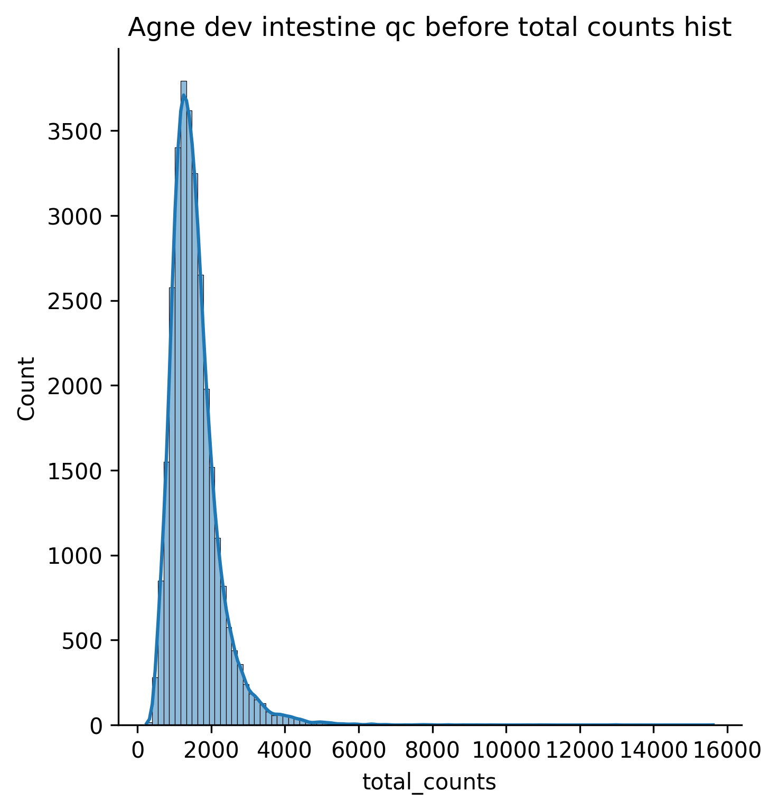 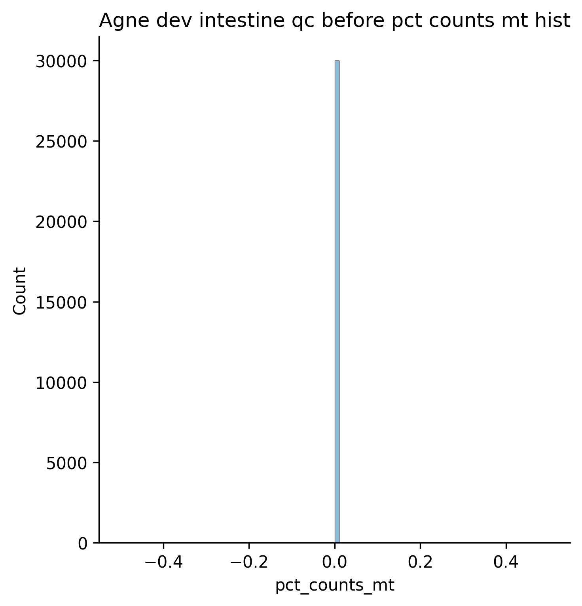 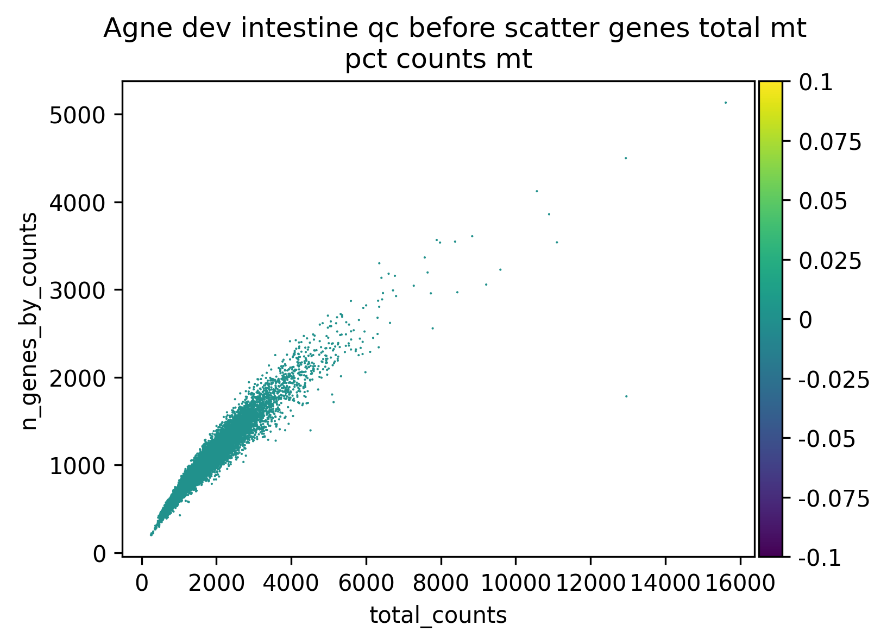


Number of count outliers with MAD > 5: 662
Number of mitochondrial outliers with MAD > 5 or pct_counts_mt > 8: 0
Filtered out outliers: 662 (2.21%)
Filtering out genes expressed in less than 20 cells
Removed 18413 genes (49.69%)
After count QC:
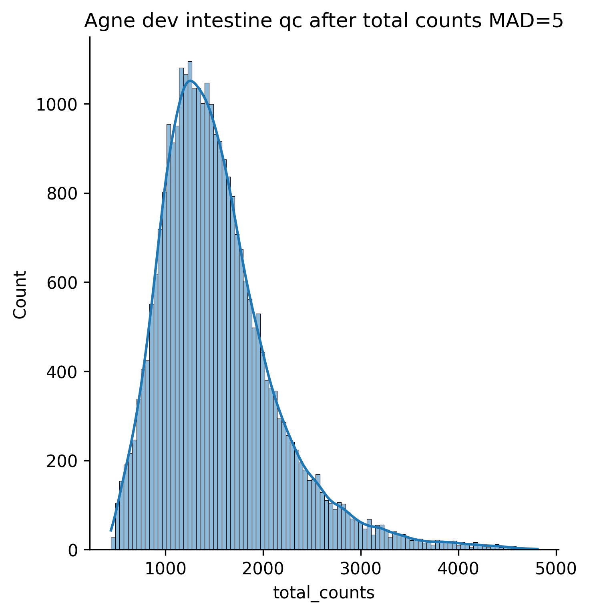 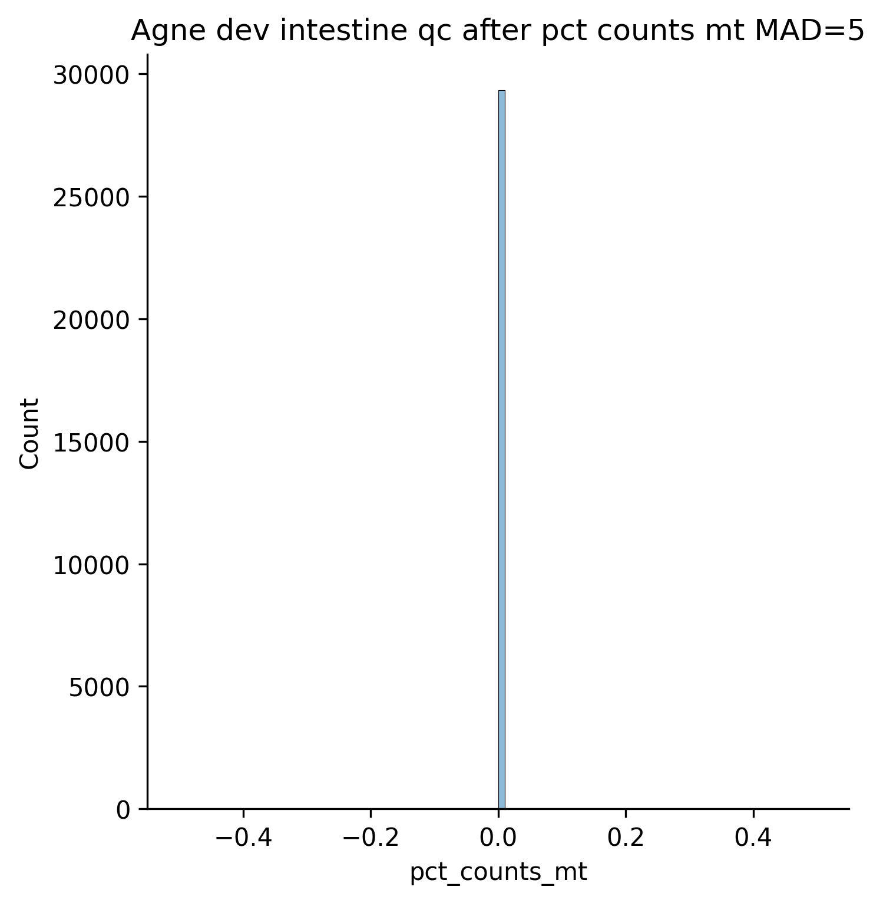 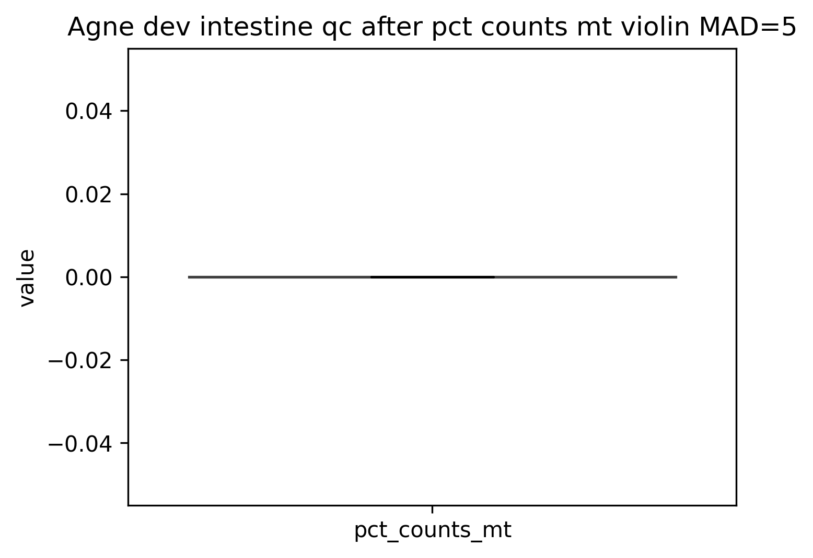 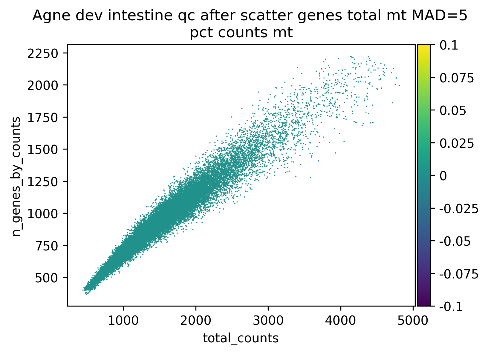


1.4.3. Doublet QC
Running scrublet with expected doublet rate 0.05

There are 2 predicted doublets, applying filter
After doublet step: (29334, 18413) (removed 0.01% cells)
1.4.4. Gene exclusion
Excluding genes matching the following patterns:
Note: Showing at most 10 rows and 10 columns from data with 11 rows and 2 columns.
| mt_genes | ['MT-'] |
| ribo_genes | ['RPS', 'RPL'] |
| hb_genes | ['^HBA|^HBB'] |
| stress_genes | ['G0S2', '^JUN', '^FOS', 'CDKN1A'] |
| IFN_genes | ['^IRF', '^IFN'] |
| ccl_genes | ['CCL'] |
| MHC_genes | ['^HLA-[A-Z]'] |
| hist_genes | ['HIST'] |
| comp_genes | ['^C1Q'] |
| ig_genes | ['^IGH', '^IGK', '^IGL'] |
Removing 413 genes (2.24%)
Shape after exclusion panel filtering: (29334, 18000)
load_dataset
function: load_dataset parameters: filename: Agne_colonpolyp.raw_counts_stand.h5ad max_cells: 30000 study: Agne_polyp tissue_type: tissue cache_file: data/load_dataset_63d6d72f4f14.h5ad
load file 10: Agne_colonpolyp.raw_counts_stand.h5ad
file_version: 2026-10-06 12:31:36.169570589
Loaded 'Agne_colonpolyp.raw_counts_stand.h5ad' (backed): 19182 × 36601
Gene names: index → ENSG IDs (15350 without ensembl_id kept via symbol), dropped 0 duplicates → 36601 genes
Pre-computed QC metrics from gene_name column
1.4.5. Loaded: Agne_colonpolyp.raw_counts_stand.h5ad
Shape: 19182 cells × 36601 genes
layers: ['counts'] | obsm: []
obs columns
Note: Showing at most 10 rows and 10 columns from data with 31 rows and 4 columns.
| index | column | dtype | n_unique | top values |
|---|---|---|---|---|
| 0 | study_name | category | 1 | Agne_polyp (19182) |
| 1 | sample_id | category | 24 | TP-OX-762_polyp (2587), TP-OX-758_polyp (2553), RG-016_polyp (2434) |
| 2 | batch | category | 10 | SEQ03 (4294), SEQ09_POOL2 (2882), SEQ04 (2659) |
| 3 | donor | category | 3 | Agne_polyp_donor2 (11754), Agne_polyp_donor1 (4361), Agne_polyp_donor3 (3067) |
| 4 | tissue | category | 1 | large intestine (19182) |
| 5 | disease | category | 2 | pcancer (11848), H (7334) |
| 6 | tissue_group | category | 1 | tissue (19182) |
| 7 | disease_group | category | 2 | PRE_CANCER (11848), NORMAL (7334) |
| 8 | tissue_detail | category | 4 | Ascending colon (6980), Caecum (5120), Sigmoid colon (5109) |
| 9 | disease_detail | category | 3 | Tubular adenoma (8209), (7334), Tubulovillous adenoma (3639) |
var columns
Note: Showing at most 10 rows and 10 columns from data with 14 rows and 4 columns.
| index | column | dtype | n_unique | sample values |
|---|---|---|---|---|
| 0 | gene_name | object | 36601 | AC007325.2 (1), MIR1302-2HG (1), FAM138A (1) |
| 1 | ensembl_id | category | 21251 | ENSG00000310560 (1), ENSG00000000003 (1), ENSG00000000005 (1) |
| 2 | ensembl_source | category | 5 | direct_hgnc_exact (21243), unmapped (13447), ambiguous_direct_hgnc_exact (1903) |
| 3 | ensembl_gene_tag | category | 2 | single_gene (21250), multiple_genes (1) |
| 4 | mt | bool | min=0 mean=0.000355 max=1 | |
| 5 | ribo | bool | min=0 mean=0.00281 max=1 | |
| 6 | hb | bool | min=0 mean=0.000328 max=1 | |
| 7 | n_cells_by_counts | int64 | min=0 mean=447 max=1.91e+04 | |
| 8 | mean_counts | float64 | min=0 mean=0.0381 max=16.9 | |
| 9 | log1p_mean_counts | float64 | min=0 mean=0.0296 max=2.89 |
remap_columns
function: remap_columns parameters: column_map: {"Age": "age", "Chemistry": "chemistry", "Disease": "disease", "Donor": "donor", "Patient": "donor", "PatientID": "donor", "Sample": "sample_id", "SampleID": "sample_id", "Sex": "sex", "Tissue": "tissue_type", "assay": "chemistry", "cohort": "study", "condition": "disease", "condition_detail": "disease_detail", "dataset": "study", "detailed_context": "disease_detail", "diagnosis": "disease", "diagnosis_detail": "disease_detail", "disease_status": "disease", "disease_subtype": "disease_detail", "donor_id": "donor", "gender": "sex", "library_type": "chemistry", "organ": "tissue_type", "patient": "donor", "patient_id": "donor", "protocol": "chemistry", "sample": "sample_id", "sampleID": "sample_id", "sample_type": "tissue_type", "source_tissue": "tissue_type", "subtype": "disease_detail", "tissue": "tissue_type"} defaults: {"chemistry": "10x_3p_multiome", "disease": "pcancer", "disease_detail": "Colorectal polyps (pre-cancer)"} cache_file: data/remap_columns_9b5a0fa4645f.h5ad
remap_columns: no renames applied (targets already present or sources absent)
qc_full
function: qc_full parameters: excluded_gene_patterns: null expected_doublet_rate: 0.05 frac_treshold: 0.05 low_count_treshold: 1000 mad_outlier_var: 5 min_cells_per_gene: 20 mitochondria_cutoff_percentage: 8 name: Agne_polyp_colon cache_file: data/qc_full_8f9673ee538c.h5ad
1.5. Quality Control
1.5.1. Ambient RNA QC
Checking if a cleanup is necessary, flagging cells with less than 1000 counts as potential ambient RNA contamination
Potential RNA contamination detected (33.0% of cells < 1000 counts)
IGNORE_AMBIENT_RNA set — skipping cleanup and continuing (count QC still removes low-count cells)
1.5.2. Count QC
| index | count | mean | std | min | 25% | 50% | 75% | max |
|---|---|---|---|---|---|---|---|---|
| total_counts | 19182 | 1394.28 | 623.52 | 500 | 885 | 1298 | 1777 | 4222 |
| n_genes_by_counts | 19182 | 852.31 | 294.21 | 275 | 610 | 825 | 1051 | 2332 |
| pct_counts_mt | 19182 | 0 | 0 | 0 | 0 | 0 | 0 | 0 |
| pct_counts_ribo | 19182 | 0.04 | 0.09 | 0 | 0 | 0 | 0.06 | 1.41 |
| pct_counts_hb | 19182 | 0 | 0 | 0 | 0 | 0 | 0 | 0 |
| pct_counts_in_top_20_genes | 19182 | 14.66 | 3.67 | 5.82 | 12.09 | 13.94 | 16.52 | 55.54 |
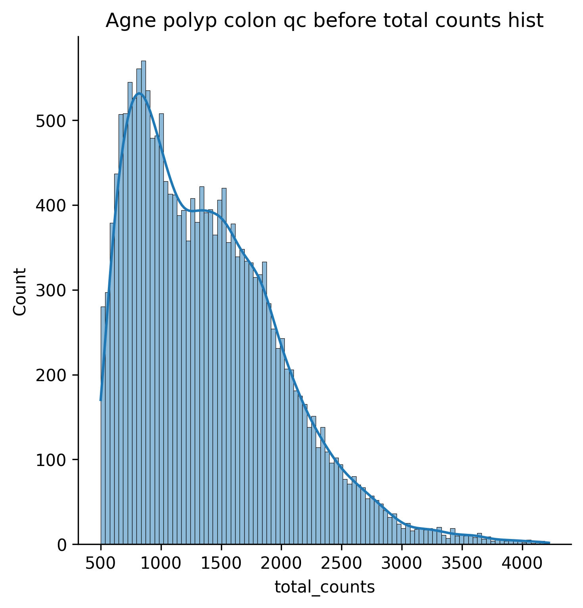 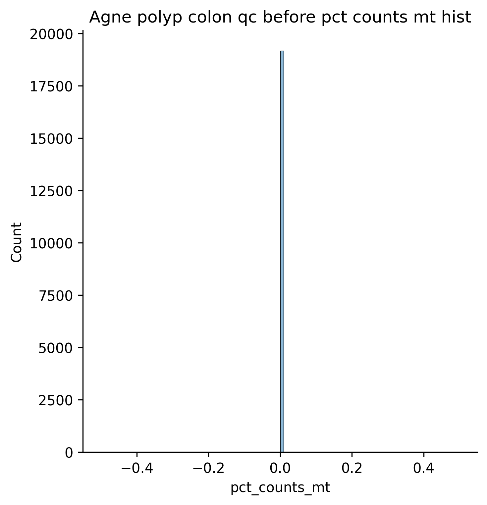 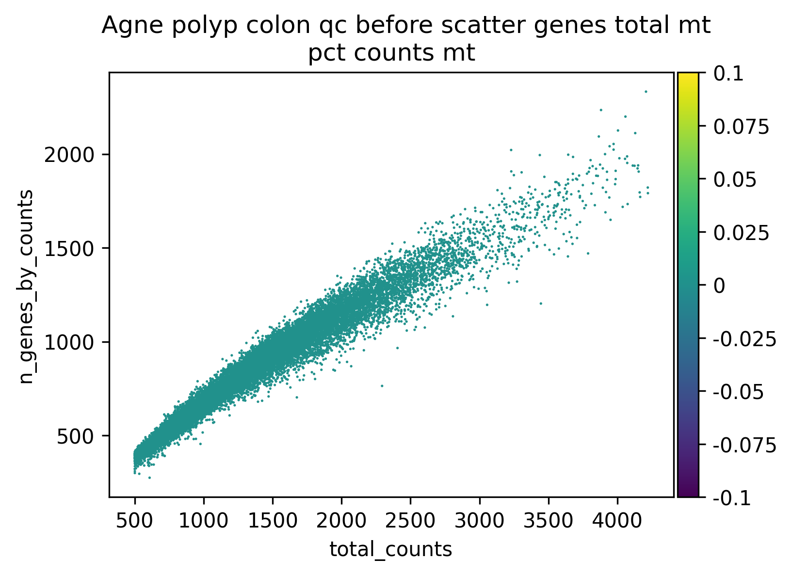


Number of count outliers with MAD > 5: 301
Number of mitochondrial outliers with MAD > 5 or pct_counts_mt > 8: 0
Filtered out outliers: 301 (1.57%)
Filtering out genes expressed in less than 20 cells
Removed 15616 genes (57.33%)
After count QC:
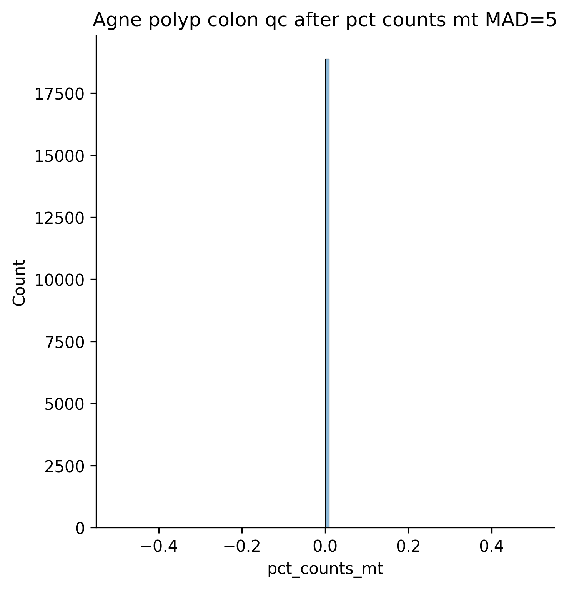 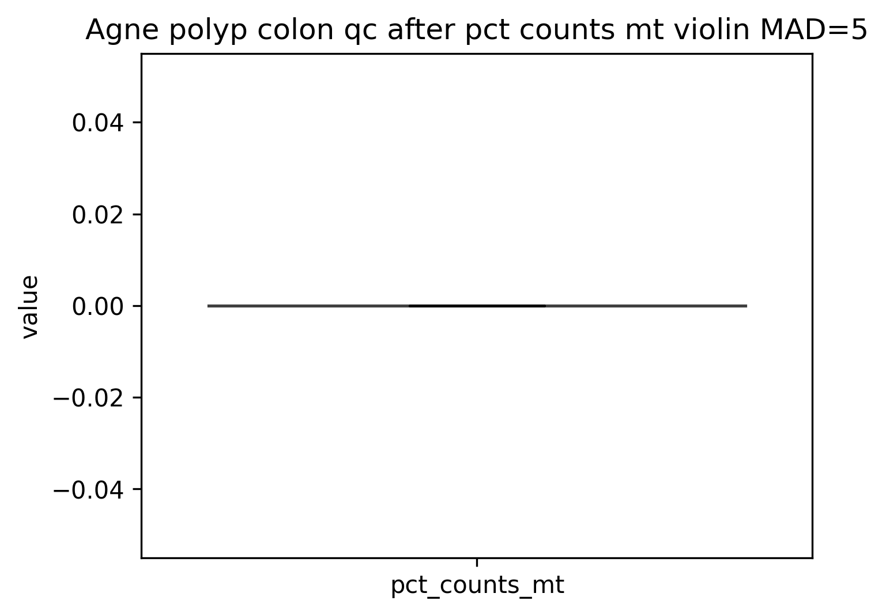 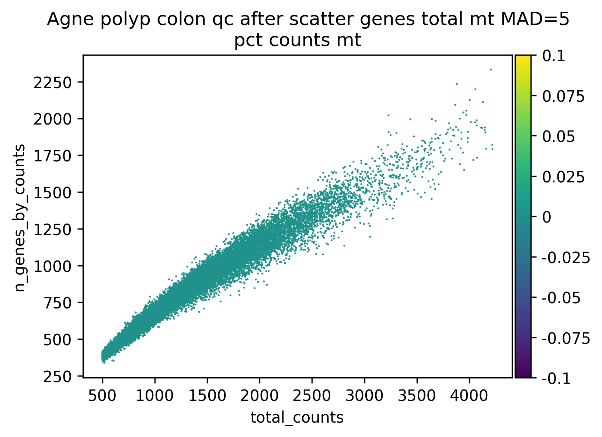


1.5.3. Doublet QC
Running scrublet with expected doublet rate 0.05

There are 2 predicted doublets, applying filter
After doublet step: (18879, 15616) (removed 0.01% cells)
1.5.4. Gene exclusion
Excluding genes matching the following patterns:
Note: Showing at most 10 rows and 10 columns from data with 11 rows and 2 columns.
| mt_genes | ['MT-'] |
| ribo_genes | ['RPS', 'RPL'] |
| hb_genes | ['^HBA|^HBB'] |
| stress_genes | ['G0S2', '^JUN', '^FOS', 'CDKN1A'] |
| IFN_genes | ['^IRF', '^IFN'] |
| ccl_genes | ['CCL'] |
| MHC_genes | ['^HLA-[A-Z]'] |
| hist_genes | ['HIST'] |
| comp_genes | ['^C1Q'] |
| ig_genes | ['^IGH', '^IGK', '^IGL'] |
Removing 382 genes (2.45%)
Shape after exclusion panel filtering: (18879, 15234)
2. Integration 'combined'
2.1. Cohort overview

| index | dataset | n_cells | tissue | study | n_diseases |
|---|---|---|---|---|---|
| 0 | Ali2023_BC_OC | 28180 | PBMC | Ali2023 | 2 |
| 1 | Wong2022_PrC_prostate | 29180 | prostate | Wong2022 | 1 |
| 2 | Lee2022_pancreas | 27125 | pancreas | GSE165045 | 2 |
| 3 | Chow2023_EC_PBMC | 25032 | PBMC | Chow2023 | 1 |
| 4 | Borcherding2021_ccRCC | 24324 | PBMC | Borcherding2021 | 1 |
| 5 | Agne_CD_ileum | 4079 | tissue | Agne_CD | 2 |
| 6 | Martin_CD_ileum | 23824 | tissue | Martin_CD | 1 |
| 7 | Luoma2020_Colitis_colon | 26897 | tissue | Luoma2020 | 2 |
| 8 | Agne_dev_intestine | 29334 | tissue | Agne_developmental | 1 |
| 9 | Agne_polyp_colon | 18879 | tissue | Agne_polyp | 2 |
Total: 236,854 cells · 10 datasets · 10 disease values
2.2. Dataset merge
Ali2023_BC_OC: 16017 genes, 13711 ENSG-keyed (symbol_col=gene_name); sample ['AL627309.1', 'AL627309.5', 'ENSG00000237491']
Wong2022_PrC_prostate: 20791 genes, 17040 ENSG-keyed (symbol_col=gene_name); sample ['AL627309.1', 'AL627309.5', 'ENSG00000228463']
Lee2022_pancreas: 16790 genes, 14927 ENSG-keyed (symbol_col=gene_name); sample ['AL669831.5', 'ENSG00000177757', 'ENSG00000225880']
Chow2023_EC_PBMC: 15836 genes, 13752 ENSG-keyed (symbol_col=gene_name); sample ['AL627309.1', 'AL627309.5', 'ENSG00000237491']
Borcherding2021_ccRCC: 15698 genes, 15698 ENSG-keyed (symbol_col=gene_name); sample ['ENSG00000279457', 'ENSG00000228463', 'ENSG00000237094']
Agne_CD_ileum: 13203 genes, 12165 ENSG-keyed (symbol_col=gene_name); sample ['ENSG00000237491', 'ENSG00000228794', 'ENSG00000225880']
Martin_CD_ileum: 14695 genes, 13228 ENSG-keyed (symbol_col=gene_name); sample ['AL669831.5', 'ENSG00000225880', 'ENSG00000230368']
Luoma2020_Colitis_colon: 14915 genes, 13348 ENSG-keyed (symbol_col=gene_name); sample ['AL627309.1', 'AL669831.5', 'ENSG00000225880']
Agne_dev_intestine: 17994 genes, 14632 ENSG-keyed (symbol_col=gene_name); sample ['AL627309.1', 'AL627309.5', 'ENSG00000237491']
Agne_polyp_colon: 15228 genes, 12856 ENSG-keyed (symbol_col=gene_name); sample ['AL627309.5', 'ENSG00000237491', 'ENSG00000228794']
Union gene universe across 10 datasets: 25709 genes
load file 11: inhibitory_receptor_list_new.csv
file_version: 2026-05-13 15:49:25.468477661
load file 12: state_markers.csv
file_version: 2026-04-21 10:55:48.543853355
Coverage filter: keeping 13757 / 25709 genes (measured in ≥7/10 datasets; 2 whitelist-rescued)
Lineage markers present in merged set: ['CD3D', 'CD3E', 'CD3G', 'CD8A', 'CD8B', 'CD8B2', 'CD4', 'TRDC', 'TRGC1', 'TRGC2'] (of ['CD3D', 'CD3E', 'CD3G', 'CD8A', 'CD8B', 'CD8B2', 'CD4', 'TRDC', 'TRGC1', 'TRGC2'])
Merged 10 datasets: 236854 cells × 13757 genes
tissue_type: {'tissue': 103013, 'PBMC': 65189, 'prostate': 29180, 'pancreas': 27125, 'kidney': 11272, 'breast': 1039, 'ovary': 36}
study: {'Agne_developmental': 29334, 'Wong2022': 29180, 'Ali2023': 28180, 'GSE165045': 27125, 'Luoma2020': 26897, 'Chow2023': 25032, 'Borcherding2021': 24324, 'Martin_CD': 23824, 'Agne_polyp': 18879, 'Agne_CD': 4079}
source: {'Agne_dev_intestine': 29334, 'Wong2022_PrC_prostate': 29180, 'Ali2023_BC_OC': 28180, 'Lee2022_pancreas': 27125, 'Luoma2020_Colitis_colon': 26897, 'Chow2023_EC_PBMC': 25032, 'Borcherding2021_ccRCC': 24324, 'Martin_CD_ileum': 23824, 'Agne_polyp_colon': 18879, 'Agne_CD_ileum': 4079}
disease: {'H': 57806, 'PC': 29180, 'CrD': 27641, 'BC': 25472, 'EC': 25032, 'ccRCC': 24324, 'CP': 22996, 'pcancer': 11636, 'Colitis': 10059, 'OC': 2708}
normalise
function: normalise parameters: {} cache_file: data/normalise_effabb472f74.h5ad
2.3. Normalisation
Normalised in reference to total counts
Transformed with log1p


2.4. T cell selection (CD3+; all subtypes)
score_and_select_t_cells
function: score_and_select_t_cells parameters: {} cache_file: data/score_and_select_t_cells_402b159f7f11.h5ad
Calculated marker score cd3_score from genes: CD3G, CD3D, CD3E
Calculated marker score cd8_score from genes: CD8A, CD8B, CD8B2
Calculated marker score cd4_score from genes: CD4
Calculated marker score NK cells_score from genes: NKG7, GNLY, KLRD1, NCAM1
Calculated marker score B cells_score from genes: CD79A, MS4A1, CD19
Calculated marker score Macrophages_score from genes: CD68, CSF1R, MRC1
Calculated marker score Fibroblasts_score from genes: COL1A1

T cell selection (CD3+): 236854 → 93069 cells
3. combined: CD8 lineage
select_cd8_cells
function: select_cd8_cells parameters: {} cache_file: data/select_cd8_cells_5111f128b08f.h5ad
CD8 subset: 34910 / 93069 cells (37.5%)
tissue_type: {'tissue': 15782, 'PBMC': 7606, 'prostate': 4447, 'pancreas': 4343, 'kidney': 2433, 'breast': 283, 'ovary': 16}
4. COMBINED_CD8 lineage: full processing
normalise
function: normalise parameters: {} cache_file: data/normalise_142d1432b3e3.h5ad
4.1. Normalisation
Normalised in reference to total counts
Transformed with log1p


load file 13: inhibitory_receptor_list_new.csv
file_version: 2026-05-13 15:49:25.468477661
feature_selection_full
function: feature_selection_full parameters: batch_key: study display_top_n_genes: 20 marker_file: state_markers.csv n_top_genes: 5000 old_seurat: true whitelist_genes: ["gene", "PDCD1", "BTLA", "CD200R1", "CTLA4", "LAG3", "TIGIT", "HAVCR2", "CLEC12A", "CLEC12B", "CLEC1A", "CLEC1B", "CLEC4A", "CLEC8A", "CLEC9A", "FCRL2", "FCRL3", "FCRL4", "FCRL5", "FCRL6", "FCGR2A", "FCGR2B", "FCGR2C", "KIR2DL1", "KIR2DL2", "KIR2DL3", "KIR2DL4", "KIR2DL5A", "KIR3DL1", "KIR3DL2", "KIR3DL3", "KLRB1", "KLRC1", "KLRF2", "KLRG1", "LILRB1", "LILRB2", "LILRB3", "LILRB4", "LILRB5", "CD72", "CD99L2", "CEACAM1", "MPIG6B", "LAIR1", "NCR2", "PECAM1", "PILRA", "SIRPA", "VSIR", "VSTM1", "VSTM4", "CD22", "CD33", "SIGLEC10", "SIGLEC11", "SIGLEC12", "SIGLEC5", "SIGLEC6", "SIGLEC7", "SIGLEC8", "SIGLEC9", "SLAMF1", "CD244", "LY9", "CD84", "SLAMF6", "SLAMF7", "CD5", "CD3D", "CD3E", "CD3G", "CD8A", "CD8B", "CD8B2", "CD4", "TRDC", "TRGC1", "TRGC2", "NCAM1", "NKG7", "GNLY", "KLRD1", "CD19", "MS4A1", "CD79A", "CD68", "CSF1R", "MRC1", "COL1A1", "COL1A2", "FAP"] cache_file: data/feature_selection_full_4cef56c91dcc.h5ad
4.2. Feature selection
load file 14: state_markers.csv
file_version: 2026-04-21 10:55:48.543853355
4.2.1. Highly Variable Gene selection
Batch-aware HVG selection (batch_key='study'): genes ranked by variability within batches, so batch-specific genes (differing panels/platforms) are not selected
HVGs selected: 5023 (including 92 whitelisted genes)


4.2.2. Top 20 expressed genes after selection:

pca_umap
function: pca_umap parameters: name: combined_cd8 cache_file: data/pca_umap_be57eeb8e61e.h5ad
4.3. PCA UMAP (pre-scVI reference)

integrate_scanorama
function: integrate_scanorama parameters: batch_cols: ["study", "assay_chemistry"] name: combined_cd8 cache_file: data/integrate_scanorama_9cd187b92833.h5ad
4.4. Scanorama integration
assay_chemistry (5' vs 3'): {"5'": 29719, "3'": 5191}
batches (study × assay_chemistry): {"Luoma2020|5'": 9081, "Ali2023|5'": 5290, "Wong2022|5'": 4447, "GSE165045|5'": 4343, "Borcherding2021|5'": 3010, "Martin_CD|3'": 2486, "Chow2023|5'": 2038, "Agne_developmental|3'": 1857, "Agne_CD|5'": 1510, "Agne_polyp|3'": 848}
Split into 10 batches: {"Ali2023|5'": 5290, "Wong2022|5'": 4447, "GSE165045|5'": 4343, "Chow2023|5'": 2038, "Borcherding2021|5'": 3010, "Agne_CD|5'": 1510, "Martin_CD|3'": 2486, "Luoma2020|5'": 9081, "Agne_developmental|3'": 1857, "Agne_polyp|3'": 848}
Integration embedding obsm['X_integrated']: (34910, 30)
Stored layers['integrated_normalized_log1p']: Scanorama-corrected log-scale, range [-0.09304, 0.2209]
umap_integrated
function: umap_integrated parameters: name: combined_cd8 cache_file: data/umap_integrated_4517a04b90a3.h5ad
4.5. UMAP on integration embedding (X_integrated)
Leiden clusters: 11
4.6. COMBINED_CD8: integration comparison (PCA vs integrated UMAP)


4.7. COMBINED_CD8: state labeling
label_states
function: label_states parameters: marker_file: state_markers.csv cache_file: data/label_states_42134b19094b.h5ad
load file 15: state_markers.csv
file_version: 2026-04-21 10:55:48.543853355
4.7.1. Labeling states based on markers:
| cytotoxic | effector | exhausted | naive/memory |
|---|---|---|---|
| IFNG1 | RORC | TOX | ID3 |
| PRF1 | TBX21 | ENTPD1 | CCR7 |
| GZMA | CX3CR1 | BATF | SELL |
| GZMB | RORA | LAG3 | CXCR3 |
| GNLY | ZEB2 | TIGIT | LEF1 |
| KLRG1 | TOX2 | TCF7 | |
| ID2 | PDCD1 | ZEB1 | |
| PRDM1 | TRIB1 | CD28 | |
| BHLHE40 | CTLA4 |
State marker genes in dataset: 30 present, 1 missing
Omitted state markers: IFNG1
4.7.2. Assigned state labels:
| state | n_cells | pct_cells |
|---|---|---|
| naive/memory | 10853 | 31.10 |
| cytotoxic | 9715 | 27.80 |
| effector | 7712 | 22.10 |
| exhausted | 6630 | 19 |
4.8. COMBINED_CD8: sanity check lineage scores

4.9. COMBINED_CD8: overview UMAP

4.10. COMBINED_CD8: standalone disease UMAP


4.11. COMBINED_CD8: individual state-marker gene UMAPs
load file 16: state_markers.csv
file_version: 2026-04-21 10:55:48.543853355
Warning: no genes matched for score marker_IFNG1 in layer 'log1p' — column set to NaN
Calculated marker score marker_PRF1 from genes: PRF1
Calculated marker score marker_GZMA from genes: GZMA
Calculated marker score marker_GZMB from genes: GZMB
Calculated marker score marker_GNLY from genes: GNLY
Calculated marker score marker_RORC from genes: RORC
Calculated marker score marker_TBX21 from genes: TBX21
Calculated marker score marker_CX3CR1 from genes: CX3CR1
Calculated marker score marker_RORA from genes: RORA
Calculated marker score marker_ZEB2 from genes: ZEB2
Calculated marker score marker_KLRG1 from genes: KLRG1
Calculated marker score marker_ID2 from genes: ID2
Calculated marker score marker_PRDM1 from genes: PRDM1
Calculated marker score marker_BHLHE40 from genes: BHLHE40
Calculated marker score marker_TOX from genes: TOX
Calculated marker score marker_ENTPD1 from genes: ENTPD1
Calculated marker score marker_BATF from genes: BATF
Calculated marker score marker_LAG3 from genes: LAG3
Calculated marker score marker_TIGIT from genes: TIGIT
Calculated marker score marker_TOX2 from genes: TOX2
Calculated marker score marker_PDCD1 from genes: PDCD1
Calculated marker score marker_TRIB1 from genes: TRIB1
Calculated marker score marker_CTLA4 from genes: CTLA4
Calculated marker score marker_ID3 from genes: ID3
Calculated marker score marker_CCR7 from genes: CCR7
Calculated marker score marker_SELL from genes: SELL
Calculated marker score marker_CXCR3 from genes: CXCR3
Calculated marker score marker_LEF1 from genes: LEF1
Calculated marker score marker_TCF7 from genes: TCF7
Calculated marker score marker_ZEB1 from genes: ZEB1
Calculated marker score marker_CD28 from genes: CD28

5. COMBINED_CD8: cell type and metadata UMAPs
load file 17: inhibitory_receptor_list_new.csv
file_version: 2026-05-13 15:49:25.468477661
5.1. Marker scores: raw (log1p) and integrated (integrated_normalized_log1p)
Calculated marker score cd3_score from genes: CD3G, CD3D, CD3E
Calculated marker score cd3_score_integrated from genes: CD3G, CD3D, CD3E
Calculated marker score cd8_score from genes: CD8A, CD8B, CD8B2
Calculated marker score cd8_score_integrated from genes: CD8A, CD8B, CD8B2
Calculated marker score cd4_score from genes: CD4
Calculated marker score cd4_score_integrated from genes: CD4
Calculated marker score gd_score from genes: TRGC1, TRDC, TRGC2
Calculated marker score gd_score_integrated from genes: TRGC1, TRDC, TRGC2
Calculated marker score NK cells_score from genes: NKG7, GNLY, KLRD1, NCAM1
Calculated marker score NK cells_score_integrated from genes: NKG7, GNLY, KLRD1, NCAM1
Calculated marker score B cells_score from genes: CD79A, MS4A1, CD19
Calculated marker score B cells_score_integrated from genes: CD79A, MS4A1, CD19
Calculated marker score Macrophages_score from genes: CD68, CSF1R, MRC1
Calculated marker score Macrophages_score_integrated from genes: CD68, CSF1R, MRC1
Calculated marker score Fibroblasts_score from genes: COL1A1
Calculated marker score Fibroblasts_score_integrated from genes: COL1A1
Calculated marker score inhibitory_receptor_score from genes: CD22, SLAMF7, CD84, FCGR2B, CEACAM1, PILRA, LAG3, CD99L2, LILRB1, CD33, VSIR, CD5, CLEC4A, KLRB1, SLAMF1, CD244, LY9, KIR2DL1, SIGLEC9, LILRB2, KLRC1, HAVCR2, CD72, KLRG1, SIGLEC10, FCGR2A, FCRL3, SLAMF6, CTLA4, CD200R1, CLEC1B, LAIR1, KIR3DL1, SIGLEC7, CLEC12A, FCRL6, TIGIT, BTLA, LILRB4, PDCD1, KIR2DL4, SIRPA, LILRB3, KIR3DL2, KIR2DL3, PECAM1, MPIG6B
Calculated marker score inhibitory_receptor_score_integrated from genes: CD22, SLAMF7, CD84, FCGR2B, CEACAM1, PILRA, LAG3, CD99L2, LILRB1, CD33, VSIR, CD5, CLEC4A, KLRB1, SLAMF1, CD244, LY9, KIR2DL1, SIGLEC9, LILRB2, KLRC1, HAVCR2, CD72, KLRG1, SIGLEC10, FCGR2A, FCRL3, SLAMF6, CTLA4, CD200R1, CLEC1B, LAIR1, KIR3DL1, SIGLEC7, CLEC12A, FCRL6, TIGIT, BTLA, LILRB4, PDCD1, KIR2DL4, SIRPA, LILRB3, KIR3DL2, KIR2DL3, PECAM1, MPIG6B
5.2. Gamma-delta score UMAP (sanity check)

5.3. Annotation UMAP: integrated embedding vs PCA (raw embedding)


5.4. Score UMAP: integrated (integrated_normalized_log1p) vs raw (log1p)

6. COMBINED_CD8: inhibitory receptor analysis
Inhibitory receptor genes expressed (mean log1p > 0.1): 21: SLAMF7, CD84, LAG3, VSIR, CD5, KLRB1, SLAMF1, CD244, LY9, KLRC1, HAVCR2, KLRG1, SLAMF6, CTLA4, CD200R1, LAIR1, FCRL6, TIGIT, PDCD1, KIR2DL4, PECAM1
6.1. IR expression per gene
IR obs columns — integrated: ['IR_SLAMF7_integrated', 'IR_CD84_integrated', 'IR_LAG3_integrated', 'IR_VSIR_integrated', 'IR_CD5_integrated', 'IR_KLRB1_integrated', 'IR_SLAMF1_integrated', 'IR_CD244_integrated', 'IR_LY9_integrated', 'IR_KLRC1_integrated', 'IR_HAVCR2_integrated', 'IR_KLRG1_integrated', 'IR_SLAMF6_integrated', 'IR_CTLA4_integrated', 'IR_CD200R1_integrated', 'IR_LAIR1_integrated', 'IR_FCRL6_integrated', 'IR_TIGIT_integrated', 'IR_PDCD1_integrated', 'IR_KIR2DL4_integrated', 'IR_PECAM1_integrated']
IR obs columns — raw: ['IR_SLAMF7_raw', 'IR_CD84_raw', 'IR_LAG3_raw', 'IR_VSIR_raw', 'IR_CD5_raw', 'IR_KLRB1_raw', 'IR_SLAMF1_raw', 'IR_CD244_raw', 'IR_LY9_raw', 'IR_KLRC1_raw', 'IR_HAVCR2_raw', 'IR_KLRG1_raw', 'IR_SLAMF6_raw', 'IR_CTLA4_raw', 'IR_CD200R1_raw', 'IR_LAIR1_raw', 'IR_FCRL6_raw', 'IR_TIGIT_raw', 'IR_PDCD1_raw', 'IR_KIR2DL4_raw', 'IR_PECAM1_raw']
load file 18: state_markers.csv
file_version: 2026-04-21 10:55:48.543853355
6.2. IR dotplots
Plotting 21 genes from adata.var[inhibitory_receptor_genes_expressed]

Plotting 21 genes from adata.var[inhibitory_receptor_genes_expressed]

Plotting 21 genes from adata.var[inhibitory_receptor_genes_expressed]

Plotting 21 genes from adata.var[inhibitory_receptor_genes_expressed]

Plotting 21 genes from adata.var[inhibitory_receptor_genes_expressed]

Plotting 21 genes from adata.var[inhibitory_receptor_genes_expressed]

Plotting 21 genes from adata.var[inhibitory_receptor_genes_expressed]

Plotting 21 genes from adata.var[inhibitory_receptor_genes_expressed]

Plotting 21 genes from adata.var[inhibitory_receptor_genes_expressed]

Plotting 21 genes from adata.var[inhibitory_receptor_genes_expressed]

6.3. IR boxplots and stripplots
Plotting 21 genes from adata.var[inhibitory_receptor_genes_expressed]

Plotting 21 genes from adata.var[inhibitory_receptor_genes_expressed]

Plotting 21 genes from adata.var[inhibitory_receptor_genes_expressed]

Plotting 21 genes from adata.var[inhibitory_receptor_genes_expressed]

6.4. FindAllMarkers
dotplot_allmarkers
function: dotplot_allmarkers parameters: cluster_col: leiden n_markers_per_cluster: 5 standard_scale: var cache_file: data/dotplot_allmarkers_aee6b9dc09f2.h5ad
6.5. FindAllMarkers
6.5.1. Finding significant genes with FindAllMarkers (via Seurat in R)
parallelising with up to 64 R worker(s)
Ran FindAllMarkers in R, keeping up to 5 markers per cluster and selected 54 genes
Plotting 54 genes from adata.var[findallmarkers_selected]

6.5.2. Cluster-to-state summary by leiden:
| cluster | n_cells | dominant_state | pct_dominant_state | top_markers |
|---|---|---|---|---|
| 6 | 1960 | cytotoxic | 59.20 | FGFBP2; PLEK; GZMH; FCRL6; GNLY |
| 1 | 5978 | naive/memory | 91.30 | ACTN1; TRABD2A; SELL; MAL; LEF1 |
| 2 | 4336 | cytotoxic | 57.20 | CD38; JAKMIP1; GZMK; GZMB; EOMES |
| 4 | 3534 | effector | 61.60 | KLRB1; JCHAIN; RGS1; GPR171; CD40LG |
| 3 | 3976 | cytotoxic | 45.30 | GPR15; XCL1; XCL2; ZNF683; CAPG |
| 10 | 1110 | naive/memory | 37.50 | ZFAND2A; HSP90AA1; ICAM1; HSPD1; DNAJB1 |
| 0 | 7036 | exhausted | 30.40 | SERPINH1; HSPA6; HSPA1A; BAG3; ZFAND2A |
| 9 | 1306 | exhausted | 67.20 | VCAM1; FXYD2; HMOX1; CADM1; SEMA4A |
| 7 | 1458 | cytotoxic | 71.20 | KIR2DL4; LAT2; TRDV1; FCER1G; NCR1 |
| 8 | 1422 | effector | 34.20 | APOA1; MARCKSL1; SPON2; DDIT3; EIF4A3 |
| 5 | 2794 | naive/memory | 41.90 | FILIP1L; BTBD11; BACH2; UST; SIK3 |
Saved cluster summary CSV for manual annotation: /ceph/project/sharmalab/dnimrich/cd8atlas/output/cd8_atlas/data/combined_cd8_cluster_state_summary.csv